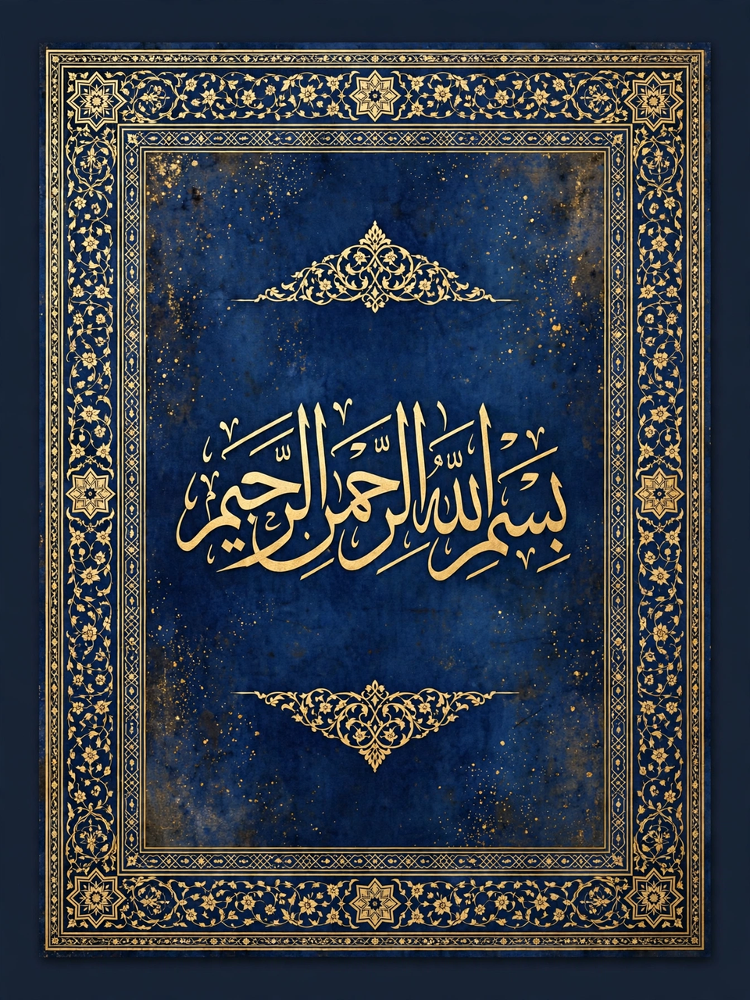

From Wikipedia, the free encyclopedia
| Hadith of Gabriel | |
|---|---|
 Calligraphic panel with hadith text | |
| Source | Sahih Muslim; also in Sahih al-Bukhari (variants) |
| Narrator | Umar ibn al-Khattab |
| Subject | Definitions of Islam, Iman, and Ihsan; signs of the Hour |
The Hadith of Gabriel (Arabic: حديث جبريل, ḥadīth Jibrīl) is one of the most famous and foundational hadith — reports of the sayings and doings of the Prophet Muhammad — in Islam. In it, the angel Gabriel (Jibril), appearing in human form, questions Muhammad before his companions about islam, iman (faith), and ihsan (excellence), and about the Day of Judgment, in order to teach the community its religion. Classical scholars such as al-Nawawi placed it at the head of their collections and called it the "mother of the Sunnah."
As narrated by Umar ibn al-Khattab in Sahih Muslim, a man of dazzling white clothes and very black hair, showing no signs of travel, sat before the Prophet and asked a series of questions. On islam — submission — Muhammad answered with the Five Pillars: testifying that there is no god but God and Muhammad is His Messenger, establishing prayer (prepared for by wudu and oriented by the qibla), giving zakat, fasting Ramadan, and performing Hajj if able. On iman he listed six articles: belief in God, His angels, His books, His messengers, the Last Day, and divine decree, "its good and its evil." On ihsan he said:
"To worship God as though you see Him; and if you do not see Him, He sees you."
Asked about the Hour, the Prophet replied that the one questioned knew no more than the questioner, and he listed portents of it. The visitor departed, and Muhammad told Umar: "That was Gabriel, who came to teach you your religion."
The hadith supplies the standard Sunni framework of the religion in three ascending dimensions — outward practice, inward belief, and spiritual excellence — and is the charter text for Sufism's doctrine of ihsan as much as for creedal manuals' six articles of faith. It also shapes the daily life of Muslims, whose worship calendar runs through Ramadan to the pilgrimage season of Dhu al-Hijjah.